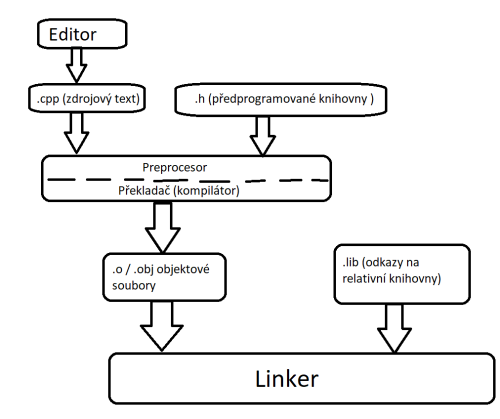

1. Ne� zaèneme
Ne� si zaèneme povídat o programovacím jazyce C++, musíme se alespoò povrchnì seznámit s nìkterımy pojmy, které budeme
vyu�ívat. Zaèneme od poèítaèe jako takového, pak si nìco povíme o programovacích jazycích, algoritmech a objektovì
orientovaném programování a skonèíme u C++ a nástrojù, které budeme potøebovat. Nìkteré z uvedenıch pojmù nepochybnì
znáte, ale je dobré si ji znovu pøeèíst, aby jste terminologii dobøe rozumnìli.
1.1 Poèítaè
S osobními poèítaèi se v souèasné dobì setkáváme dennì - najdeme je nejen v ka�dé kanceláøi, ale i témìø v ka�dé domácnosti.
Pøedpokládám, �e s poèítaèem umíte jako u�ivatelé - umíte ho zapnout, vytvoøit na nìm textovı dokument apod. Ovšem
programátor (a to i zaèínající) o nìm musí pøece jen vìdìt víc ne� bì�nı u�ivatel. I kdy� bue povídání o této lekci
silnì zjednodušené, pro naše úèely bude staèit.
Obvykle se øíká, �e poèítaè obsahuje ètyøi základní èásti:
-
Procesor je souèást, která opravdu "poèítá", lépe øeèeno která zpracovává informace. Zároveò také øídí
èinnost všech ostatních èástí poèítaèe.
-
Operaèní pamì� slou�í k ukládání dat (informací), která zpracovává, a programù, tedy pøíkazù, které
urèují co má dìlat. Vše, co je v této pamìti, se pøi vypnutí poèítaèe ztratí, "zapomene". Pou�ívá se pro ni oznaèení
RAM, co� je zkratka anglickıch slov Random Access Memory, tedy pamì� s náhodnım pøístupem.
-
Vstupní a vıstupní zaøízení slou�í k vımìnì informací s okolím. (Poèítaè by nám nebyl nic platnı, kdyby
nám nemohl pøedat vısledky své práce.) Typickımi pøíklady vstupních zaøízení jsou klávesnice, myš, skener atd.
Typickımi pøíklady vıstupních zaøízení, mù�e bıt obrazovka monitoru nebo tiskárna. Pro vstupní a vıstupní zaøízení se
pou�ívá zkratka V/V nebo I/O (z anglického input/output).
-
Trvalá pamì� slou�í k trvalému ukládání dat a programù.1 Data v ní se pøi vypnutí poèítaèe
neztrácejí, má zpravidla mnohonásobnì vìtší kapacitu ne� operaèní pamì�, ale práce s ní je mnohonásobnì pomalejší
ne� práce s operaèní pamìtí. Jako trvalá pamì� se pou�ívají pøevá�nì magnetické disky (pevnı disk, disk SSD - jeho název
pochazí z anglickıch slov solid state drive a je to pamì�ové zaøízení podobné jako flash disk neboli "fleška", ovšem
s vìtší kapacitou) a samozøejmì také disky CD nebo DVD.
___________
1 Setkáváme se také s oznaèením vnìjší pamì�, nebo� v dobách poèítaèové prehistorie byly magnetické disky opravdu ulo�eny
mimo vlastní poèítaè. I dnes lze ovšem pøipojit k poèítaèi vnìjší(externí) pamì�ové médium.
1.1.1 Operaèní pamì�
Základem operaèní pamìti jsou elektronické obvody, ketré mohou mít dva stavy - napøíklad vypnuto nebo zapnuto.
Jeden z tìchto stavù obvykle odpovídá èíslici 0, druhı èíslici 1. Údaje v pamìti jsou proto vyjádøeny jen pomocí
nul a jednièek, tvz. dvojkové soustavì. Místo, na které mù�eme ulo�it èíslici 0 nebo 1, oznaèujeme bit. Operaèní pamì� je
tedy dlouhá øada bitù.
Ovšem práce s jednotlivımi bity je nepohodlná, a proto se bity sdru�ují do vìtších celkù. V dnešních poèítaèích se témìø
bez vyjímky pou�ívají skupiny velikosti 8 bitù, které se nazıvají bajty (anglicky byte, tedy slabika). Poznamenejme, �e
pro bity se pou�ívá znaèka b a pro bajty znaèka B.
Jednotlivé bajty, tvoøící operaèní, jsou oèíslovány. Poèáteèní bajt má èíslo 0, následující má èíslo 1 adt. Toto poøadové èíslo se nazıvá
adresa bajtu. (Ve skuteènosti mù�e bıt zále�itost s adresami trochu slo�itìjší, ale to nás v souvislosti s C++ vùbec nebude zajímat.)
1.1.2 Soustava SI, bity a bajty
Vnitøní pamì� bì�ného poèítaèe má dnes velikost nìkolik miliard bajtù, kapacita diskù a podobnıch zaøízení se vyjadøuje v bilionech bajtù.
Podobnì jako v bì�ném �ivotì nevyjadøujeme napøíklad vzdálenosti mìst v metrech, ale v kilometrech, i v informatice se pou�ívají k vyjádøení
kapacity pamìti(nebo obecnì mno�ství informace) vìtší jednotky. Bì�nì se hovoøí o kilobajtech (kB), megabajtech (MB), gigabajtech (GB) atd.
Vzhledem k tomu, �e poèítaèe jsou zalo�eny na dvojkové soustavì, je však pøirozenìjší pou�ívat jednotky zalo�ené na mocninách dvou, nikoli
na mocninách deseti, jak je tomu v soustavì SI. Proto by se mìly pou�ívat jednotky kikibajt (1 KiB = 210 B= 1024 B), mebibajt (1 MiB= 1024
KiB = 220B= 1048576 B), gibibajt (1 GiB= 230B= 1073741824 B) atd. Pøedpony tìchto jednotek jsou slo�eny z první slabiky z první
slabiky odpovídající pøedpony soustavy SI a slabiky bi ze slova binary.2
___________
2 Tyto jednotky byly zavedeny Mezinárodní elektronickou komisí r. 1998, pøijaty hlavními standardizaèními organizacemi (jsou napøíklad souèástí standardu IEC 80000-13:2008.
Quantities and units - Part 13: Information science and technology. �eneva: 2008
1.2 Datové typy a promìnné
Snadno zjistíme, �e nejmenší èíslo, které mù�e jeden bajt obsahovat, se skládá z osmi nul a pøedstavuje i v desítkové soustavì nulu.
Nejvìtší takové èíslo se bude skládat z osmi jednièek a v desítkové soustavì pøedstavuje 255. To je samozøejmì málo - s poèítaèem, kterı by znal
jen èíslo od 0 do 255, bychom si nedokázal ani pøepoèítat vıplatu. Proto se pro ukládání dat pou�ívají rùzné velké skupiny za soubou následujících bajtù
Ani to ovšem nestaèí. Snadno se pøesvìdèíme, �e kdybychom vzali napøíklad skupinu dvou za sebou následujících bajtù, mohli bychom do ní ulo�it celá èísla v rozmezí
od 0 do 65 535. Ale co kdy� budeme potøebovat záporná èísla? Co kdy� budeme potøebovat reálná èísla? Co kdy� budeme chtít vyjádøit znaky nebo logickou hodnotou
(nìjaké tvrzení platí nebo neplatí)? Musíme tedy zajistit zpùsob, kterı nám umo�ní reprezentovat data rùznıch "druhù" v pamìti poèítaèe. Jinımi slovy, musíme najít
zpùsob, jakım urèité skupinì bitù pøiøadíme hodnotu, kterou tato skupina pøedstavuje - jak ji v poèítaèi zakodóvat.
Mù�eme se napøíklad dohodnout, �e bajt s hodnotou 01000001 bude pøedstavovat znak 'A'. Tá� skupina bitù mù�e za jinıch okolností ovšem také pøedstavovat
celé èíslo, které má hodnotu 65. Stejnı bajt ale mù�e bıt souèástí vìtšího celku s úplnì jinım vıznamem.
Pøedchozí pøíklady ukazují, �e pracuje-li poèítaè s nìjakım kouskem pamìti, s nìjakou skupinou za sebou následujících bajtù na urèité adrese, musí vìdìt,
jak je tato skupina velká a jak má její obsah interpretovat. Jinımi slovy, musí znát datovı typ hodnoty, která je tam ulo�ena, musí vìdìt,
zda jde o celé èíslo, znak, logickou hodnotu atd.
Podle datového typu se také budou lišit operace, které lze s danou hodnotou provádìt. Celá èísla lze napøíklad sèítat a odeèítat, znaky lze spojovat do øetìzcù,
tedy do souvislého textu. Nyní se na celı problém podívejme trochu jinak. U� víme, �e kdy� budeme chtít pracovat s nìjakou hodnotou, musíme si ji ulo�it do pamìti.
To ale znamená, �e si tam pro ni musíme vyhradit místo a øíci, jakého typu budou údaje, které bude obsahovat. Takové místo pro ukládání hodnoty budeme nazıvat promìnná.
Abychom s promìnnou mohli zacházet, musíme ji pojmenovat, musíme ji pøidìlit identifikátor. Tomu se v programování øíká deklarace promìnné.3
___________
3 Pozdìji uvidíme, �e identifikátor - tedy jméno - mohou mít i jiné èásti programu, nejen promìnné.
1.3 Programy a programovacé jazyky
Aby mohl poèítaè nìjak zpracovávat data, která mu pøedlo�íme, musíme mu také øíci, co má vlastnì dìlat - musíme mu dát program.
Procesor umí s daty øadu operací, ovšem velice jednoduchıch. Lze mu napøíklad øíci "vezmi celé èíslo, které je na adrese 6548, a pøièti k nìmu celé èíslo
z adresy 7895". Proto�e do jeho pamìti nelze ulo�it nic jiného ne� èísla, musí bıt tyto pøíkazy vyjádøeny - zakodóvany - také èísly. Toto èíselné vyjádøení
instrukcí(pøíkazù) pro procesor se nazıvá strojovı kód a je to jediná vìc, které procesor rozumí. Jedním z problémù je, �e rùzné druhy poèítaèù pou�ívají
rùzné strojové kódy, tak�e programy ve strojovém kódu nejsou pøenositelné mezi poèítaèi s rùznımi procesory.
Jinım - a mo�ná horším - problémem je, �e programování ve strojovém kódu je velice namáhavé a nepøehledné. Také to témìø nikdo nedìlá, místo toho se pou�ívají programovací jazyky,
které se dìlí podle abstrakce na tvz. ni�ší programovací jazyky , pøíkladem je tøeba jazyk symbolickıch adres (assembler, k nìmu se dostaneme pozdìji) a na tvz.
vyšší programovací jazyky , které jsou napøíklad C, PHP, Java, Basic, Cobol a také C++.
Zápis programu ve vyšším programovacím jazyce se zpravidla skládá z vybranıch anglickıch slov a z vırazù zapsanıch podobnì jako v matematice. Programování ve vyšším jazyce je daleko
jednodušší ne� programování ve strojovém kódu. Je tu ovšem jeden háèek: takovıto program nelze pøímo spustit, nebo� poèítaè mu nerozumí. Program ve vyšším programovacím jazyce se proto buï
pøelo�it do strojového kódu, nebo interpretovat. V obou pøípadech k tomu potøebujeme další program (nebo skupinu programù), které to za nás udìlají.
Zápis programu ve vyšším programovacím jazyce se zpravidla oznaèuje jako zdrojovı kód nebo zdrojovı program, v "programátorštinì" zdroják. Textovı soubor,
kterı tento zápis obsahuje, oznaèujeme jako zdorjovı soubor. O jeho pøklad do strojového kódu ( kompilaci ) se stará program zvanı pøekladaè neboli
kompilátor (anglicky nazıvanı compiler ). V mnoha pøípadech s ním spoluparcuje ještì sestavovací program neboli linker , kterı mù�e spojit nìkolik nezávisle
pøelo�enıch èástí programu do jednoho celku. Sestavovací program také pøipojí knihovny - èásti programu, které u� nìkdo naprogramoval pøedem a které mù�eme u� jen pou�ívat.
Pøekladem a sestavenım programem vznikne soubor obsahující strojovı kód, kterı lze na cílovém poèítaèi rovnou spustit. Mezi èasto pou�ívané pøekládané programovací jazyky patøí napøíklad
C nebo C++.
Mù�eme však pou�ít speciální program, jen� bude èíst zdrojovı text a provádìt pøíkazy, které v nìm najde - interpretovat. Typickı, interpretovanım jazykem je klasickı Basic.4
Interpretované programy zoravidla bì�í vıraznì pomaleji ne� pøekládané programy. Navíc musíme na cílovı poèítaè spolu s našim programem dodat také interpretaèní program.
Doplme, �e pøekladaè libovolného programovacího jazyka(i C++) zároven kontroluje syntatickou správnost programu- tedy zda program je napsán podle jistıch formálních pravidel,
které zaruèují, �e mu poèítaè porozumí. (Syntatická správnost programu bohu�el nezaruèuje vìcnou správnost programu, tedy nezaruèuje, �e program bude dìlat to, co si pøejeme.
Zaruèuje pouze, �e ho pøekladaè doká�e pøelo�it.
___________
4 Nehovoøíme o Visual Basicu. Poznamenejme, �e ve skuteènosti mù�e bıt kterıkoli jazyk pøekládán nebo interpretovanám (existuje napøíklad interpret jazyka C++), tak�e by bylo pøesnìjší
hovoøit o jazycích zpravidla pøekládanıch a zpravidla interpretovanıch.
1.3.1 Jazyk C++
U� víme, �e C++ patøí mezi pøekládané programovací jazyky. Jeho zdrojovı kód se mù�e skládat z nìkolika souborù. Pøeklad takového programu probíhá ve tøech základních fázích:
-
Nejprve preprocesor upraví zdrojové texty - odstraní z nich komentáøe (v následující kapitole se dozvíme, co to znamená) a provede nìkteré další úpravy. Vısledkem jsou zdrojové soubory
pøipravené k vlastnímu pøekladu.
-
Pak pøekladaè pøelo�í samostatnì jednotlivé zdrojové soubory. Pøekladem z nich vzniknout tvz. relativní soubory (anglicky nazıvané object file ). Relativní soubor se typicky jmenuje
stejnì jako zdrojovı soubor, má však pøíponu - pod Windows to je zpravidla .obj, v prostøedí Linux to je .o.
-
Nakonec sestavovací program (linker) spojí relativní soubory v jeden celek, pøipojí k potøebné knihovny (u� hotové soušásti, které má pøekladaè k dispozici) a vytvoøí z nich spustitelnı soubor -
ten má pod Windows pøíponu .exe. V jinıch operaèních systémech nemusí mít �ádnou zvláštní pøíponu.
Preprocesor, pøekladaè a linker mohou bıt - a dnes zpravidla jsou - spojeny do jednoho programu, kterı provede postupnì všechny potøebné kroky. Pøepínaèi mezi zadanımi pøi
spuštìní tohoto programu lze ovšem zajistit, �e probìhne napøíklad jen zpracování preprocesorem, jen zpracování preprocesorem a pøeklad nebo jen sestavení relativních souborù do
spustitelného programu. Podrobnìji se s tím seznámíme v pøíští kapitole.

Obrázek - Prùbìh pøekladu v jazyce C++.
1.3.2 Assebler
Mezistupnìm mezi strojovım kódem a vyššími programovacími jazyky je asembler (assembler, assembly language).Je to jazyk slo�enı pøedevším z mnemotechnickıch zkratek
jednotlivıch instrukcí strojového kódu. Napøíklad instrukce:
MOV EAX, 0
znamená v jednom z asemblerù procesoru Intel pou�ívanıch na PC "ulo� 0 do registru EAX"(Registry jsou souèástí procesoru, v nich� se provádìjí operace s daty.) Asembler také zavádí promìnné
jako pojmenovaná místa v pamìti, a proto se pro nì døíve pou�ívalo oznaèení jazyk symbolickıch adres. Poznamenejme, �e pro jeden procesor mù�e existovat (a zpravidla existuje) více asemblerù.
Programování v asembleru je sice nesrovnatelnì jednodušší ne� programování ve strojovém kódu, ale na druhé stranì je nesrovnatelnì obtí�nìjší ne� programování ve vyšších programovacích jazycích.
Pøekladaèe C++ zpravidla umo�nují vytvoøit také pøeklad zdrojového kódu do asembleru.
1.4 Operaèní systém
S poèítaèem se typicky dodává alespoò jeden program, a to operaèní systém. To je program, kterı startuje automaticky hned po spuštìní poèítaèe a bì�í po dobu jeho bìhu. "O�ivuje" poèítaè: pøíjmá
pokyny u�ivatele (nerozhoduje, zde jsou vyjádøeny slovem zapsanım v pøíkazové øádce nebo kliknutím na myší a ikonì), stará se o jejich provedení a informuje u�ivatele o vısledcích.
Vedle toho ovšem má ještì øadu dalších úloh, z nich� pro nás nejdùle�itìjší je, �e poskytuje slu�by bì�ícím programùm. Stará se o jejich spuštìní, o pøidìlování pamìti, poskytuje nástroje pro práci
se soubory atd. Chceme-li napøíklad v programu otevøít soubor, program prostì pøedá náš po�adavek operaènímu systému a ten se postará o vše potøebné.
Mezi nejznámìjší operaèní systémy na osobních poèítaèích patøí rùzné verze Windows a Linuxu, na mobilních zaøízeních je to napøíklad Androi, iOS a další.
1.5 Program a algoritmus
C++, podobnì jako ostatní programovací jazyky, slou�í k zápisu programu. U� víme, �e program je nìjakı soubor instrukcí (pøíkazù), které poèítaèi øíkají, co má dìlat.
Program v�dy pøedstavuje návod k provedení nìjaké úlohy nebo k vyøešení nìjakého problému. Pøitom musíme mít na pamìti, �e poèítaè za nás problém nevyøeší, jen za nás udìlá
hrubou práci - prohledá obrovské mno�ství záznamù v databázi, vypoèítá nìco podle slo�itıch vzorcù, vykreslí obrázek a podobnì. My mu ovšem musíme øíci, jak to má udìlat. Jinımi slovy, musíme tento návod,
jak dospìt k po�adovanému vısledku.
Tento návod musí mít urèité vlastnosti. Nìkteré z nich mohou vypadat samozøejmé, ale pøesto je zde uvedeme:
-
Návod musí vést k po�adovanému vısledku.
-
Musí se zkládat z krokù, kterım poèítaè rozumí - tvz. elementárních krokù. (To pro nás znamená, �e ho musíme umìt zapsat v nìkterém programovacím jazyce.)
-
Tìchto krokù nesmí bıt nekoneènì mnoho. (Nejde o to, �e bychom mohli napsat program, kterı je nekoneènì velkı - to se nám asi nepodaøí. Není ale nic tì�kého napsat krátkı program, kterı nikdy neskonèí, proto�e se v nìm
bude donekoneèna opakovat urèitá skupina instrukcí.
-
Po ka�dém kroku musí poèítaè vìdìt, kterım krokem pokraèovat.
Návod, kterı tyto podmínky splòuje, se obvykle oznaèuje jako algoritmus. Na program se mù�eme dívat jako na zápis algoritmu v programovacím jazyce.
1.5.1 Metoda shora dolù
Otázkou je, jak algoritmu dospìt. Je asi jasné, �e nejprve musíme umìt danı problém vùbec vyøešit sami, 5 a pak se mù�eme sna�it zapsat ho jako posloupnost
elementárních krokù. Pøitom se pou�ívá obvykle tvz. metoda shora dolù. Návod se rozkládá na menší a menší èásti, a� dospìjeme k elementárním krokùm. Pøi tomto zjemòování se
samozøejmì mù�e stát, �e budeme muset pøedchozí rozdìlení upravit, nìkteré kroky spojit, nìkteré kroky pøidat ap.
Pøíklad 1.1: Øazení zadanıch hodnoty
dodìlám ...